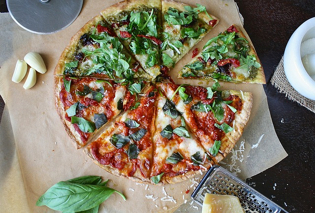

Neapolitan cuisine is synonymous with pizza! Probably that's why Neapolitans consider their region as a heart of Italy...however, we would say the stomach of Italy. So, let's have a short travel sunny Italy: the cooking-flight will take no more than 60 minutes, the ingredient-tickets are very cheap, and we guarantee you will get a lot of gastronomic pleasure with your family. Explore the recipe.
Paella is a Valencian rice dish that has become the famous dish among tourist. It is not surprising, Spanish cooks have been playing with paellas recipe for decades. Now you can find a huge variety of recipes from the quite budget vegetarian paella to the expensive paella with diverse vatiety of seafood. Explore our tips and tricks on how to make paella with a seafood in a budget way. Read the recipes.